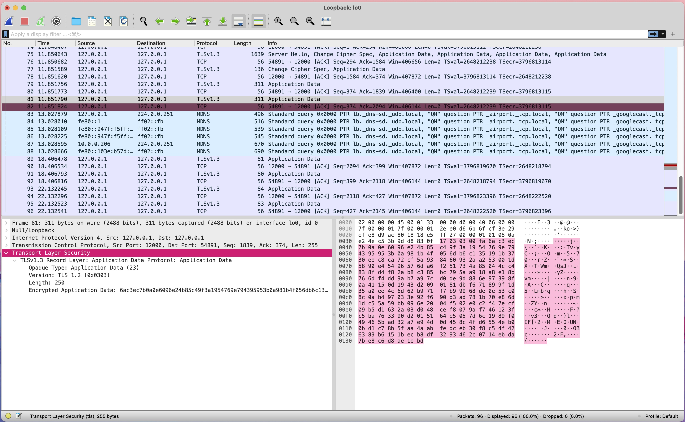
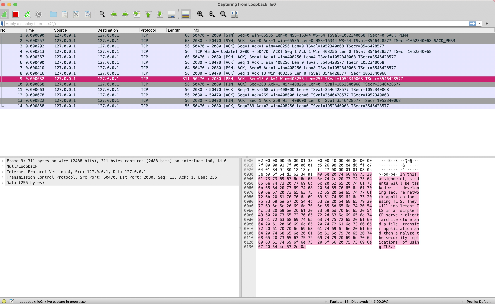
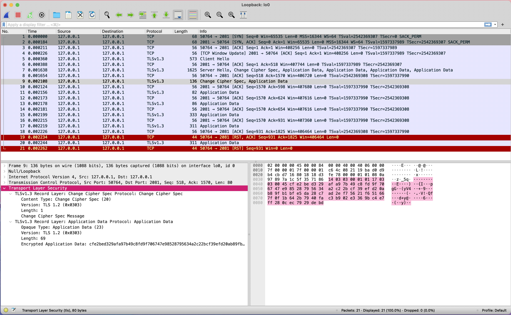

this project involves enhancing a tcp server/client written in python to support tls encryption.
the enhancements are done by wrapping the accepted client/server connection in this SSL context to secure it.
enhancements for the server would look like
context = ssl.create_default_context(ssl.Purpose.CLIENT_AUTH)
context.load_cert_chain(certfile='../../certs/cert.pem', keyfile='../../certs/key.pem')
secureConnection = context.wrap_socket(client_socket, server_side=True)
file_name = secureConnection.recv(file_name_length).decode()
enhancements for the client would look like
context = ssl.create_default_context(ssl.Purpose.SERVER_AUTH)
context.check_hostname = False
context.load_verify_locations("../certs/cert.pem")
secureConnection = context.wrap_socket( client_socket, server_hostname=server_ip)
secureConnection.send(data)
Project-3-TLSProgramming ├── NetFileXfer │ ├── NetFileXferClient.py │ │ Client code for tcp enhanced with tls written in Python. │ ├── mountain-lake.jpg │ │ test file to transfer between client and server. │ ├── server │ │ └── NetFileXferServer.py │ │ Server code for tcp enhanced with tls written in Python. │ └── test.txt │ test file to transfer between client and server. ├── README.md │ markdown file documenting how to set up and run the applications. ├── README.txt │ text file documenting how to set up and run the applications. ├── certs │ ├── cert.pem │ │ cert for ssl. │ └── key.pem │ key for ssl. └── report ├── report.md │ A detailed report including: │ Overview of the implementation. │ Screenshots and analysis from Wireshark captures. │ Reflection on certificate management. ├── wireShark-after-tls.jpg │ screenshot of wireshark after tls. └── wireShark-before-tls.jpg screenshot of wireshark before tls.
wireshark capture with tls implementation shows encrypted packet 
wireshark capture before tls implementation as you can see the packet is being sent in plain text  wireshark capture with tls implementation shows encrypted packet 
In the client directory:
shasum test.txt
2880ad0ceaa3957f0ba001790fa7f8ac704dfb7a test.txt
shasum mountain-lake.jpg
30c727dab604af2be162a6fef5b98f563a4a6230 mountain-lake.jpg
In the server directory:
shasum test.txt
2880ad0ceaa3957f0ba001790fa7f8ac704dfb7a test.txt
shasum mountain-lake.jpg
30c727dab604af2be162a6fef5b98f563a4a6230 mountain-lake.jpg
when comparing the transfered files you can see that the sha1 hashes match meaning that our files transfered from the client to the server are the same files
role of certificate authorities (CAs)
certificte authorities are here to make sure that information being sent from the user(client-side) and an organizion(server-side) are secure and being received/sent by the correct user/organization
the process of certificate validation
client connects to TLS/TCP server
server requests verification
client send certificate
client sends key
the certificate is verified
encrypted message is sent
the implications of using self-signed certificates.
using Self-Signed certificates as we did in this assignment should only be done when testing or a small scale project only meant to be used at home when making a real project it needs to have a real certificate authority to verify.
{kind=link}
{kind=link}
{kind=link}